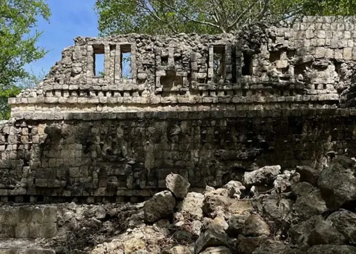
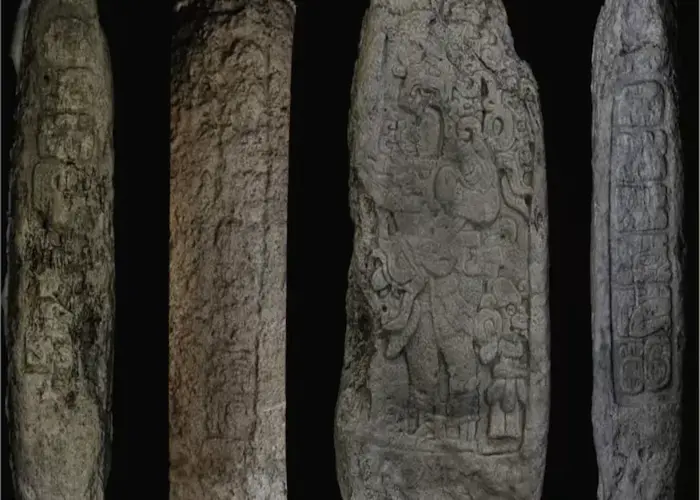
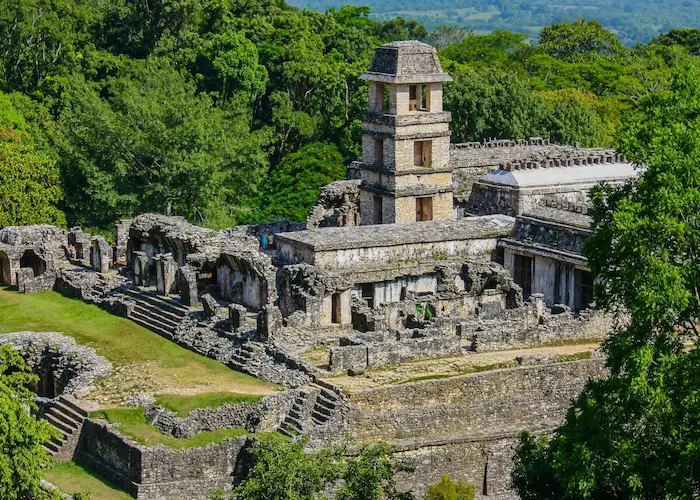
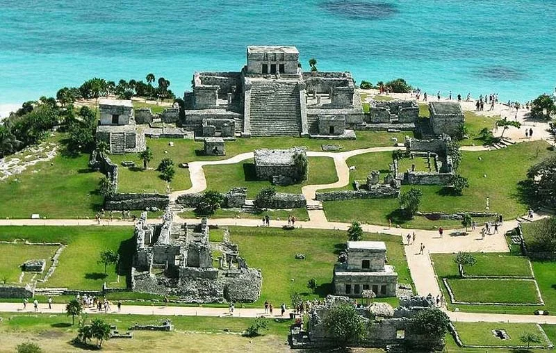

Recent Discoveries

El Jefeciño: A New Monumental Maya City in Quintana Roo
The National Institute of Anthropology and History (INAH) announced the discovery of a vast archaeological settlement spanning over 100 hectares. Dubbed "El Jefeciño," this impressive Petén-style complex houses 80 structures—some reaching up to 14 meters in height—along with "C"-shaped plazas, intact vaults, and remnants of mural paintings. This finding promises to significantly expand our understanding of ancient urban networks in the southern peninsula.

Campeche Discovery: The Oldest "Long Count" Calendar in the Lowlands
A team of researchers recently located "Stela 46" in Campeche, a stone monument containing the oldest Long Count calendar record ever found in the Maya lowlands. This historic epigraphic milestone predates the previous record, held by the famous city of Tikal, by 112 years. The groundbreaking discovery is compelling archaeologists to rewrite the timeline of early writing and timekeeping in the region.
Archaeological Sites

Chichén Itzá: The Masterpiece of Astronomy and Architecture
Recognized as one of the New Seven Wonders of the World, this iconic city served as the political and religious epicenter of the Yucatán Peninsula. Famous for the awe-inspiring Temple of Kukulkáan (El Castillo), Chichén Itzá showcases the profound Maya mastery of mathematics, timekeeping, and monumental engineering.

Palenque: The Elegant Jewel of the Jungle
Tucked deep within the lush rainforests of Chiapas, Palenque is celebrated for its exquisite, refined architecture and intricately carved stucco reliefs. Home to the legendary Tomb of Pakal the Great, this site offers an unparalleled and intimate look into ancient Maya mythology, royalty, and artistry.

Tulum: The Coastal Fortress of the Dawn
Perched dramatically on a cliff overlooking the turquoise waters of the Caribbean Sea, Tulum was one of the last cities built and inhabited by the Maya. This walled port city functioned as a vital maritime trading hub and remains one of the most visually breathtaking and unique archaeological sites in Mexico.